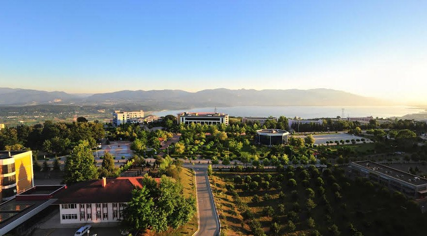
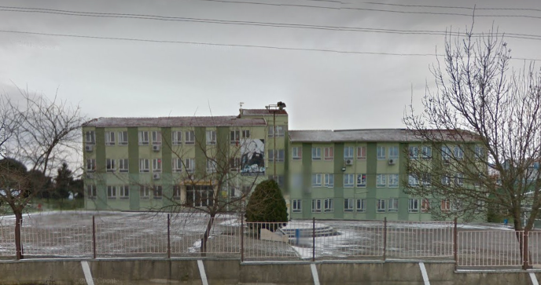
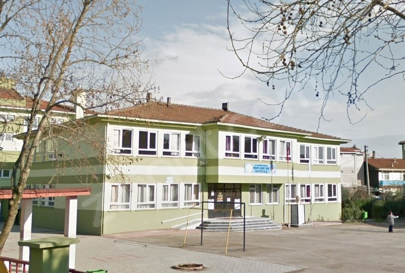
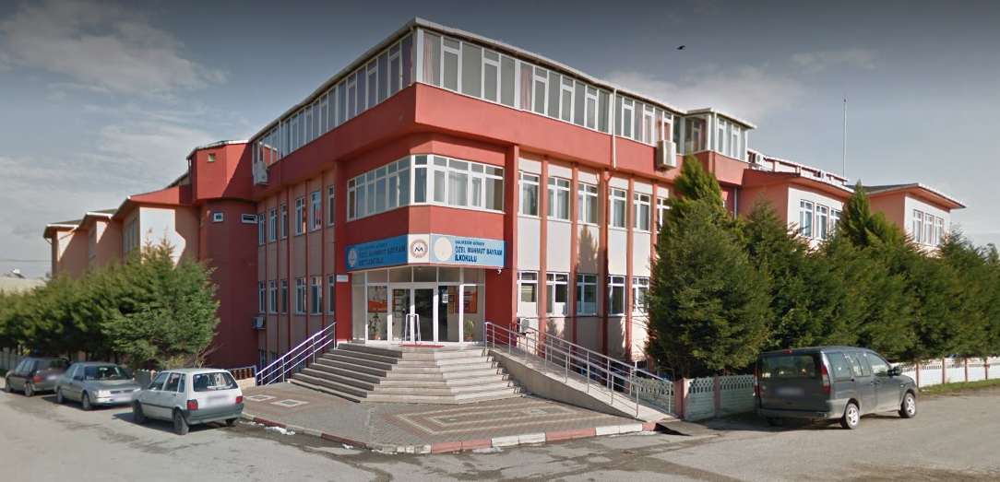
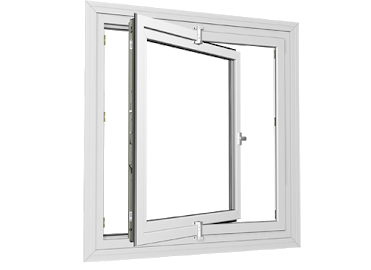
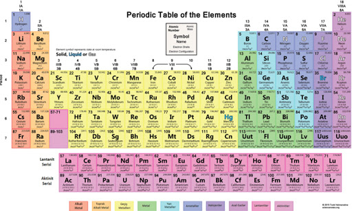
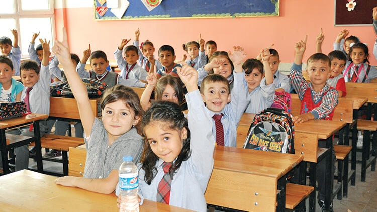

HAKKIMDA
ÖZGEÇMİŞ
ŞEHRİM
KÜLTÜREL MİRAS
GİRİŞ YAP
İLETİŞİM
EĞİTİM
2019 - devamı

Sakarya Üniversitesi, Bilgisayar ve Bilişim Bilimleri Fakültesi, Bilgisayar Mühendisliği, 1.Sınıf
2015 - 2019

Gönen Anadolu Lisesi
2011 - 2015

Mehmet Ahmet Genç Ortaokulu
2006 - 2011

Mahmut Bayram İlkokulu
PROJELER
Ocak 2014
Mehmet Ahmet Genç Ortaokulu, Bilim Şenliği, 360° Pencere Projesi

Bu proje pencerelerin ön yüzünün silinmesi sırasında yaşanan zorluklar için geliştirildi. Camları 360° döndürme fikriyle cam silmek daha kolay ve güvenilir bir hale gelecek.
Ocak 2014
Mehmet Ahmet Genç Ortaokulu, Bilim Şenliği, 3B Periyodik Tablo Projesi

Öğrencilerin kimya dersinde periyodik tabloyu kolayca kavrayabilmesi için ışık destekli 3 boyutlu bir periyodik tablo geliştirdik.
AKTİVİTELER
Ağustos - Eylül 2019
Özel Eğitim

Bir grup öğrenciye bir aylık gönüllü eğitim verdim.
Şubat 2015
Mehmet Ahmet Genç Ortaokulu, İngilizce Dersi Ödevi, İngilizce Polisiye Kısa Filmi
7 kişilik bir grup ile ingilizce konuştuğumuz polisiye konulu bir kısa film çektik. Çekimi kendi imkanlarımızla yaptık ve senaryoyu oluşturduğumuz grubun üyeleriyle birlikte yazdık.
.jpg)